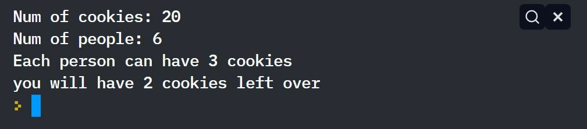
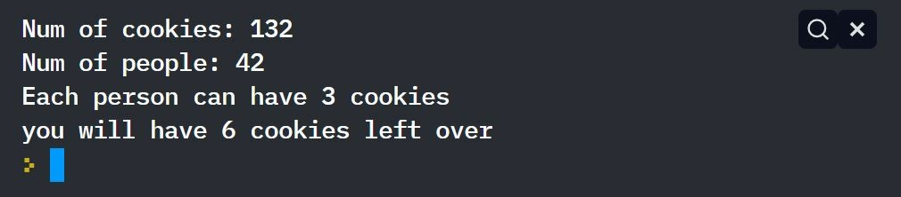

Your challenge is to create a cookie sharing program
- Explain the purpose for the program - you will help the user divide up a box of cookies with a given number of people
-The Program needs to do the following:
- Ask the user how many cookies are in the box
- Ask the user how many people want to eat the cookies
- Calculate how many cookies each person can have and how many extra cookies are left over
- Respond to the user with the results calculated
-------------------- INPUT/OUTPUT Check section --------------------------------

